\(\leftarrow\) Previous Lecture
\(\boldsymbol{x}\) and \(\boldsymbol{n}\) accept the following representations
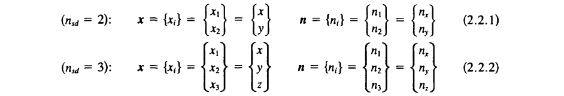
where the notation \(\Box_i\) is known as the index notation.
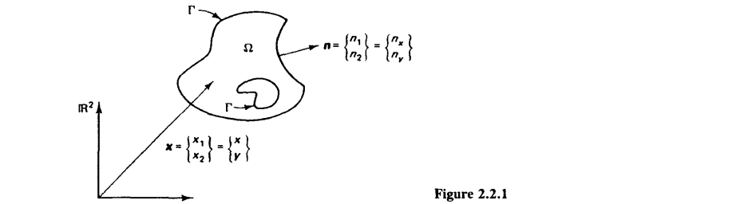
Let \(f:\bar\Omega \to \mathbb{R}\; \mathrm{be} \; C^1\). Then \[ \int_\Omega f_{,i}\, d\Omega = \int_\Gamma fn_i\, d\Gamma \]
Let \(f\) be as above and also let \(g:\bar\Omega \to \mathbb{R}\; \mathrm{be} \; C^1\). Then \[ \int_\Omega f_{,i}g\, d\Omega = -\int_\Omega fg_{,i}\, d\Omega + \int_\Gamma fgn_i\,d\Gamma \]
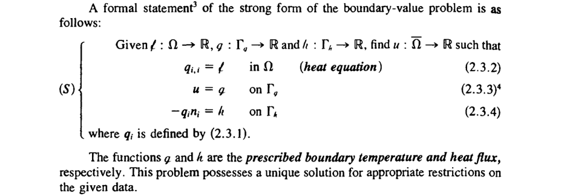
The weak formulation of the boundary-value problem can be constructed analogous to the 1-D problem.
With these definitions the weak formulation can be defined next.
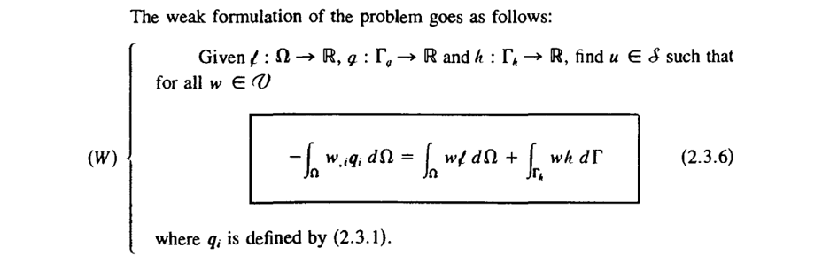
and its proof…
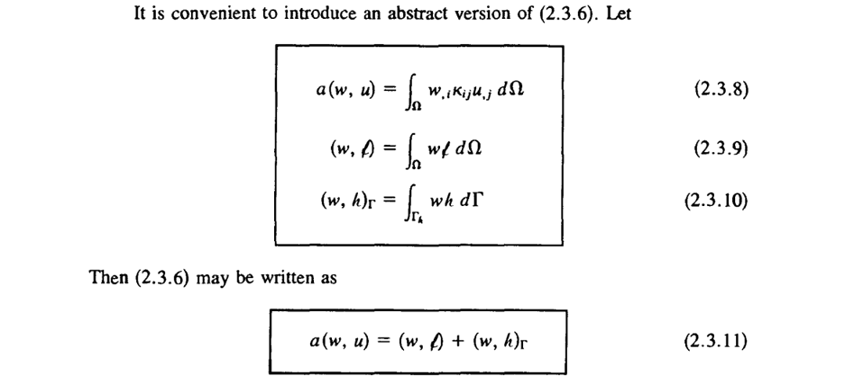
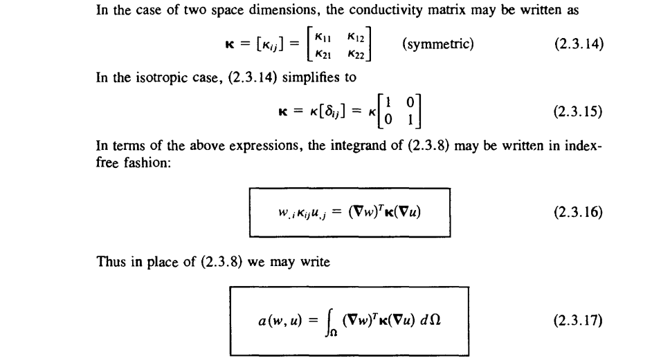
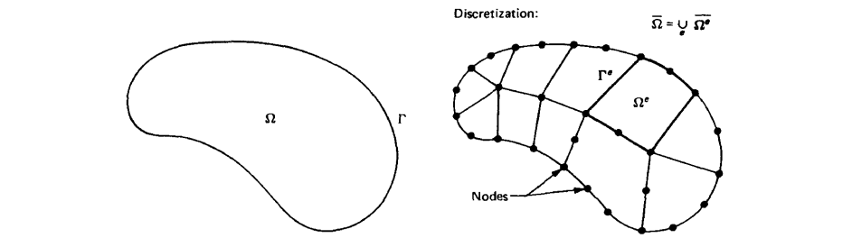
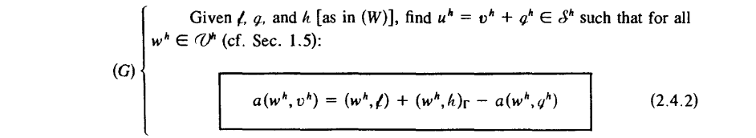
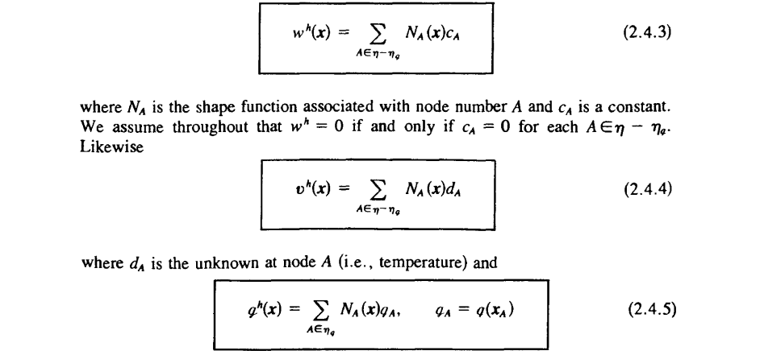
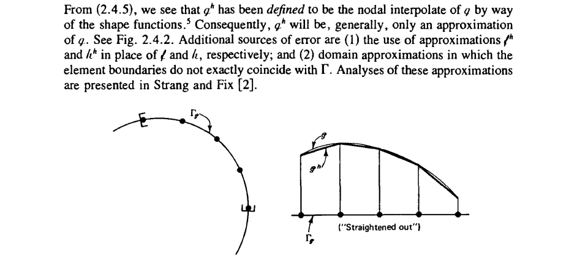
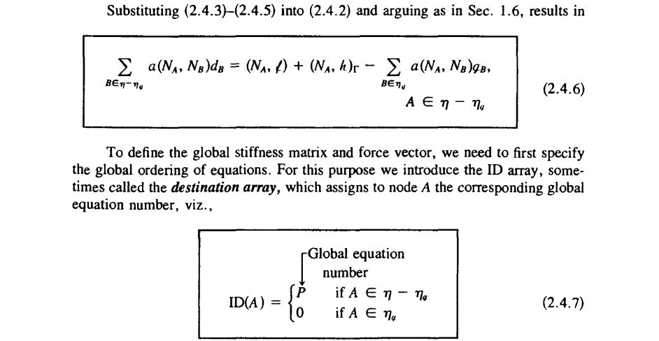
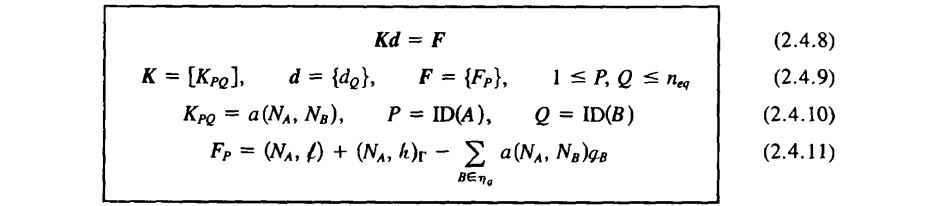
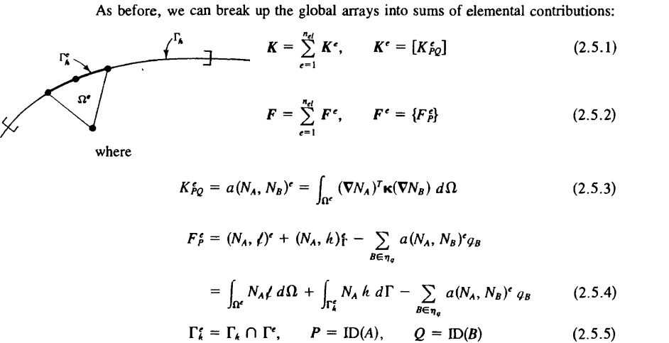
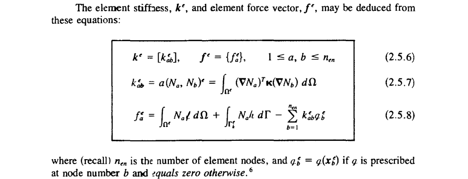
The element stiffness matrix can be written in terms of some custom variables intrinsic to the historical developments of finite elements (and it’s programming)
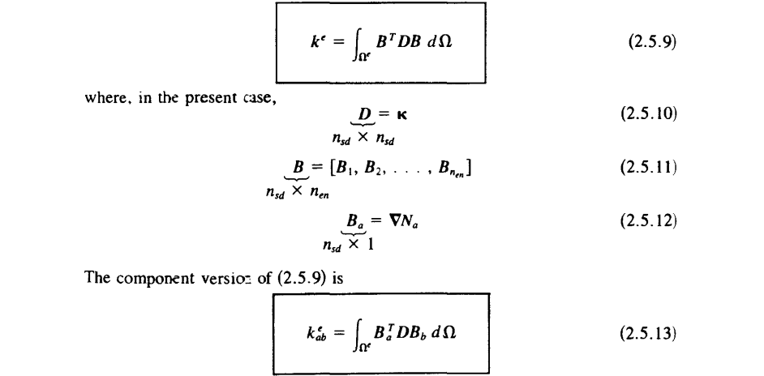
\(\boldsymbol{B}\) is widely acknowledged as the “strain-displacement” array although in the current setting it reflects the temperature gradient array.